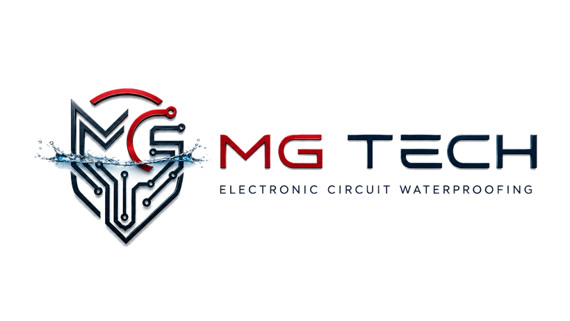
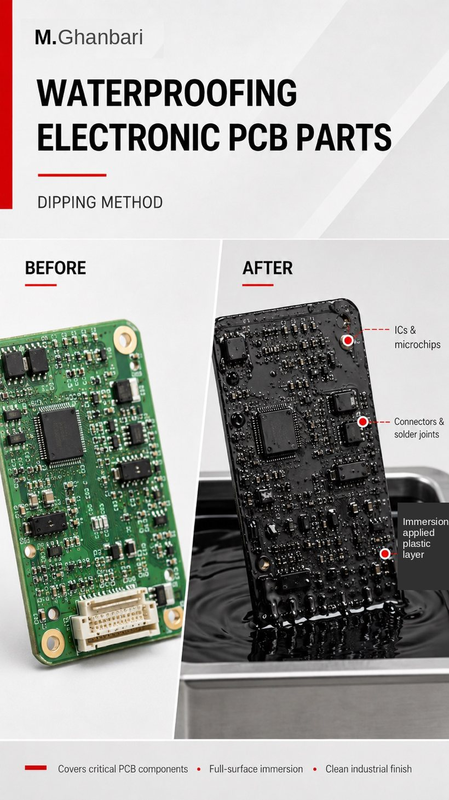

Liquid PCB Plastic Coating
Nano waterproof protective coating for PCB boards and electronic circuits
Liquid PCB Plastic Coating is a liquid plastic-based protective coating technology developed for PCB boards, sensors, lighting modules and sensitive electronic parts. It is designed to form a strong, non-transparent, mechanically resistant and water-resistant protective layer without heat treatment. The product can be applied by dipping, spraying or brush application, and compatible layers can be built when stronger protection is required.
Product Test Video
Click play to watch the real Liquid PCB Plastic Coating water-protection test video.
Watch on YouTube ▶
▶
Overview
The purpose of Liquid PCB Plastic Coating is to reduce a practical and costly problem: electronic failure caused by water, humidity, vapor, dust, salt, washing, corrosion and harsh environments. Many conventional varnish-type or acrylic-based coatings are thin and transparent; they may help with moisture protection but usually offer limited mechanical shielding. Liquid PCB Plastic Coating is positioned as a stronger industrial protective layer that combines water protection, local reinforcement and visual concealment of the board layout.
Technology Overview
The coating works with a nano-scale surface coverage concept. It is designed to follow the surface geometry of the PCB, covering solder joints, traces, component edges and selected sensitive zones. After final curing, it forms a continuous plastic-based protective coating that supports waterproofing, surface protection and mechanical stability.
Why It Is a Nano Coating
Liquid PCB Plastic Coating is described as a nano protective coating because its protection logic is based on very fine surface coverage and nano-scale interaction with the board surface. It is not only a thick external cover; the coating can follow small surface details and can be applied as a thin layer or reinforced through compatible additional layers depending on the application.
Difference from Simple Conformal Coatings
Many common market coatings are designed as very thin transparent varnish-type films, often acrylic-based or made from materials with lower mechanical resistance. They can help against humidity, dust and light corrosion, but may not provide enough mechanical protection or board concealment. Liquid PCB Plastic Coating is designed to behave as a reinforced plastic-based protective coating, especially in multi-layer applications.
Difference from Typical Superhydrophobic Coatings
Superhydrophobic coatings mainly repel water from the surface. Liquid PCB Plastic Coating is positioned differently: it creates a physical protective layer that can also help resist scratching, handling, abrasion and visual reverse engineering. It is not only about water droplets; it is about building a durable protective coating on the electronic assembly.
No-Heat Application Advantage
Liquid PCB Plastic Coating does not require pre-heating or post-heating to form the protective layer. This is important for heat-sensitive electronic assemblies, repair workshops and production environments that need a simpler process. Room-temperature application also makes the product easier to use in field repair and small-scale production.
Technology
Mechanical Resistance
After full curing, the coating forms a hard and stable layer. It is positioned as a protective material that is not easily scratched by fingernail contact. This matters because electronic assemblies are often handled, washed, repaired or installed in environments where thin coatings may be damaged by friction or light mechanical stress.
Multi-Layer Compatibility
Several layers can be applied over each other. The layers are compatible, allowing the user to build the coating from a thin protective layer to a thicker, stronger and more reinforced barrier. This is especially useful for board edges, cable entries, soldered repair zones, water-risk points and parts exposed to vibration or washing.
Water and Immersion Protection
The coating is designed for long-term protection against water and humidity. For underwater immersion or deep-water use, the complete assembly must be properly sealed. There should be no trapped air, open holes, hidden voids or uncoated gaps under the protective layer or inside the board assembly. Under correct sealing and application conditions, the system can be designed for underwater protection up to 100 meters and beyond.
Long-Term Durability Target
Liquid PCB Plastic Coating can be presented as a long-term protective solution with a 10-year-plus design target under correct application, full curing and suitable environmental conditions. Performance depends on temperature, mechanical stress, application thickness, sealing quality and external conditions. The optimized technology information in this document is based on normal application conditions and should be supported by practical testing for each final use case.
Anti-Reverse-Engineering Function
Because the coating is non-transparent, it can hide components, traces and the board layout from direct visual inspection. This helps make visual reverse engineering and direct copying more difficult. For customers who produce special electronic modules or custom control boards, this can become an additional commercial advantage.
Color Options
Main color options include black, white and gray. Custom colors can be produced for industrial projects, private-label orders, internal product coding or visual identification of protected boards. The non-transparent appearance can also support branding and security of design.
Application Methods
Liquid PCB Plastic Coating can be applied by dipping, spraying or brush application. Dipping is suitable for full-surface coverage. Spraying is suitable for controlled and uniform coating on larger areas or repeated applications. Brush application is useful for local reinforcement, repair zones, board edges, cable entries and specific water-risk areas.
Professional Masking Requirements
Connectors, switches, buttons, moving contacts, heat-dissipation surfaces, calibration points and areas that must remain serviceable should be masked before coating. Correct masking is essential because the coating is designed to create a strong protective layer and should not cover functional mechanical or removable contact areas unless intended.
Practical Comparison with Common Circuit Coatings
This section compares Liquid PCB Plastic Coating with common circuit-coating solutions used in the market from a practical consumer perspective. Many typical varnish, acrylic or thin transparent coatings are mainly designed for moisture protection and usually do not create a thick, reinforced plastic-based mechanical layer. The comparison focuses on application method, coating thickness, mechanical behavior, water protection and long-term use conditions.
| Feature | Liquid PCB Plastic Coating | Common Coatings |
|---|---|---|
| Application temperature | Room-temperature application; no thermal treatment required. | Some common coatings require controlled temperature, oven curing or stricter process conditions. |
| Coating logic | Nano-scale surface coverage with plastic-based protective coating behavior. | Often thin film, acrylic or varnish-like protection with lower mechanical build-up. |
| Mechanical resistance | Harder layer after curing; not easily scratched by fingernail contact. | Thin coatings may be more vulnerable to scratches, handling and abrasion. |
| Multi-layer build | Compatible layers can be built over each other for stronger protection. | Many common coatings are designed as one thin layer with limited mechanical build-up. |
| Water protection | Designed for long-term water and humidity protection under correct application conditions. | Often focused on humidity, splash resistance or limited water exposure. |
| Deep-water design | Can be engineered for immersion down to 100 m and beyond, provided the assembly is correctly sealed and no trapped air or voids remain under the coating. | Depth performance depends heavily on coating type, adhesion and assembly design. |
| Reverse engineering | Non-transparent layer hides components, traces and layout from direct visual inspection. | Transparent coatings leave the board visible. |
| Color options | Black, white, gray and custom colors. | Often transparent or limited color options. |
| Methods | Dipping, spraying, brush application and local reinforcement. | Usually applied by spraying or dipping, depending on the product. |
| Industrial position | Protection + mechanical barrier + anti-copy visual coverage + repair reinforcement. | Usually moisture/corrosion protection only. |
Tests
Recommended Workflow
A professional workflow includes cleaning the board, drying the surface, masking sensitive zones, applying the coating by the selected method, draining excess material where needed, applying additional layers if stronger protection is required, allowing full curing and performing electrical and environmental tests before field use.
Water Test Protocol
A controlled application water test can be performed on an active low-voltage PCB after full curing. The coated circuit is placed in water to verify the practical protective performance of the product under recorded conditions. Voltage, duration, board type, masking status, sealing quality and test conditions should be stated clearly so the result is presented as a real controlled application test.
Scratch Test Protocol
A simple scratch test can compare Liquid PCB Plastic Coating with many thin common market coatings. After full curing, the surface should be checked against fingernail contact and light handling stress. This helps explain the mechanical advantage to the consumer in a simple and understandable way.
Multi-Layer Test Protocol
A layered sample can be prepared with one, two and three coating layers. Each sample can be compared for surface thickness, coverage, mechanical resistance and edge reinforcement. This test shows that the product is not limited to a single thin layer.
Deep-Water Design Note
For deep-water use, the coating itself is only one part of the system. The complete assembly design must prevent trapped air and internal voids. If air pockets remain inside the board housing or under components, pressure can affect the system. Correct coating geometry and sealing are essential.
Electrical Safety Note
Waterproofing does not remove the need for electrical safety. Voltage, current, insulation distance, connectors, exposed metal parts and user access must be evaluated separately. The product should be presented as a protective coating, not as a replacement for electrical design and safety engineering.
Target Industries
Main target sectors include PCB repair workshops, automotive electronics, motorcycle electronics, marine equipment, CCTV and outdoor electronics, LED lighting, agriculture and greenhouses, industrial control boards, car wash/detailing services, aquarium and pool-related electronics, sensor manufacturers and custom electronic module producers.
Commercial Service Model
Liquid PCB Plastic Coating can be sold as a product or offered as a service. A workshop can provide PCB waterproofing, repaired-board sealing, LED module protection, connector-zone reinforcement, motorcycle light-board protection, car accessory protection and marine electronic board protection as paid services.
Customer Value
The main value is reducing electronic failure caused by water and humidity, extending the life of repaired or new boards, adding mechanical protection, hiding sensitive board design and offering a more robust solution for harsh environments compared with many thin transparent coatings.
Conclusion
Liquid PCB Plastic Coating is not just a simple moisture barrier. It is a nano waterproof protective coating with plastic-based mechanical strength, multi-layer compatibility, non-transparent security coverage, room-temperature application and long-term water-protection positioning for PCB and electronic circuit applications.

Applications
Drones & FPV electronics
Flight controllers, ESCs and FPV boards face rain, humidity and vibration. The coating helps protect them for outdoor, all-weather flying.
EV & battery management (BMS)
Battery-management and power-electronics boards in e-bikes, scooters and EVs can be protected against moisture, condensation and corrosion.
Solar & renewable inverters
Outdoor inverters, charge controllers and monitoring boards face humidity and temperature swings; the coating supports a longer service life.
Telecom & 5G outdoor units
Antenna controllers, routers and outdoor telecom boards are exposed to rain, dust and salt; a reinforced layer helps protect them.
Power supplies & chargers
Adapters, chargers and power boards can be protected against moisture ingress and short-circuit risk in humid environments.
Automotive ECU and modules
Selected ECU areas, connector zones and repaired sections can be protected against moisture and water contact after correct masking of sensitive parts.
Motorcycle light boards
Motorcycle lighting boards are exposed to washing, rain and vibration. Local reinforcement can help protect solder joints and repaired areas.
CCTV camera boards
Outdoor camera boards face humidity, dust, temperature changes and rain vapor. The coating can help extend service life.
Marine sensors and boat lights
Marine electronics are exposed to salt vapor and humidity. A non-transparent reinforced layer can support protection against corrosion and water.
LED boards and signage
LED strips, signage boards and outdoor lighting modules can be protected against humidity, dust and washing conditions.
Industrial control boards
Factory environments may contain dust, oil vapor and humidity. Control boards and sensor modules can be protected after correct masking of sensitive parts.
Agriculture and greenhouse electronics
Irrigation boards, humidity sensors and greenhouse lighting systems are often exposed to water spray and high humidity.
Repair workshops
After trace repair, soldering or component replacement, the protective layer can help reinforce the repaired area.
Conclusion
Liquid PCB Plastic Coating is not just a simple moisture barrier. It is a nano waterproof protective coating with plastic-based mechanical strength, multi-layer compatibility, non-transparent security coverage, room-temperature application and long-term water-protection positioning for PCB and electronic circuit applications.
Contact & Order
Get a quote or place an order — message us directly on WhatsApp or Instagram.